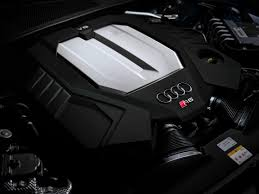
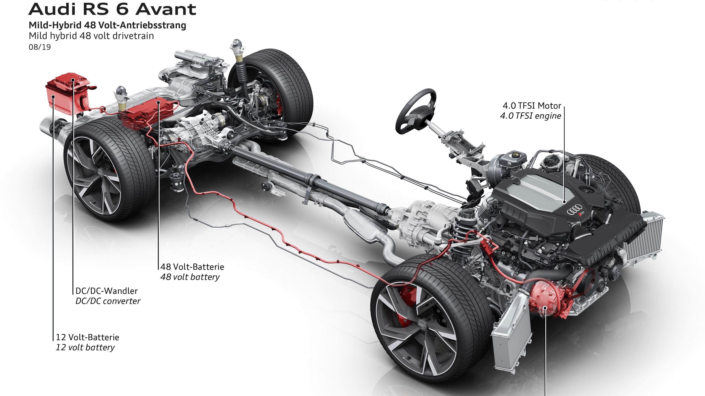
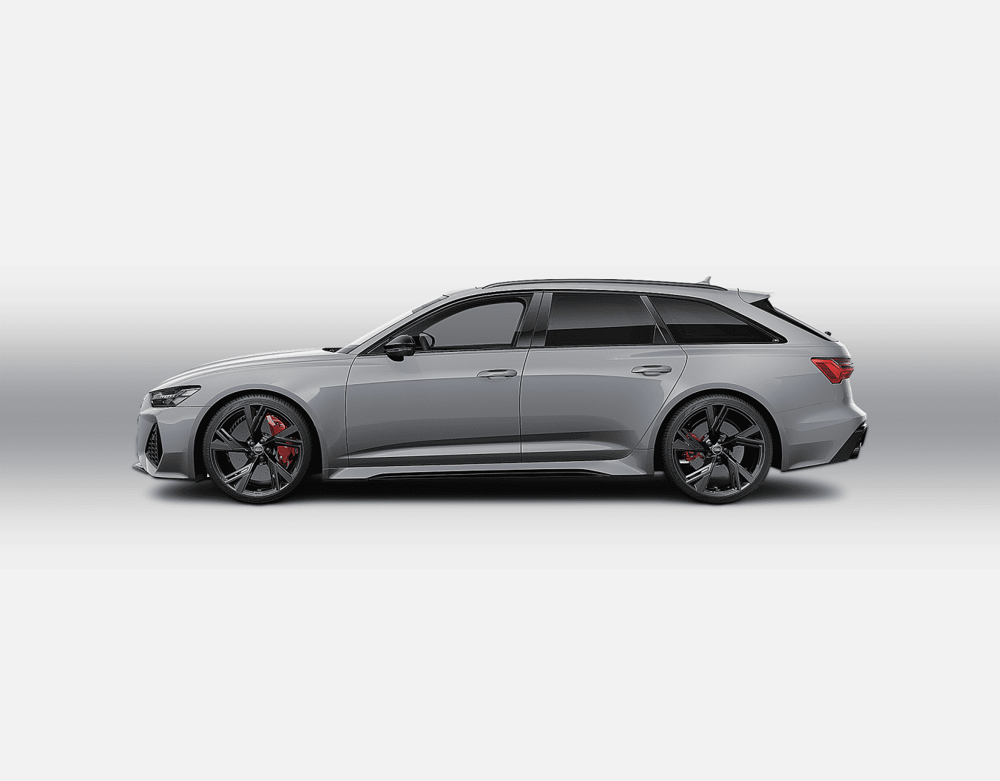

Engine
The Audi RS 6 Avant Performance is powered by a 4.0-liter TFSI twin-turbo V8 engine, producing 621 horsepower and 627 lb-ft of torque. This engine is paired with an eight-speed Tiptronic automatic transmission, providing seamless power delivery and quick gear changes.
Performance
With its powerful V8 engine, the RS 6 Avant Performance can accelerate from 0 to 60 mph in just 3.5 seconds. The Quattro all-wheel drive system ensures optimal traction and stability, while the adaptive air suspension and dynamic ride control enhance handling and comfort. The top speed is electronically limited to 155 mph, but can be increased to 174 mph with the optional Dynamic package.
Design
The RS 6 Avant Performance boasts an aggressive and sporty design, featuring a wide stance, flared wheel arches, and a distinctive RS-specific front grille. The exterior is complemented by 21-inch alloy wheels, Matrix LED headlights, and a panoramic sunroof. Inside, the cabin is luxurious and high-tech, with RS sport seats, a flat-bottomed steering wheel, and premium materials throughout.
Features
The Audi RS 6 Avant Performance comes equipped with a host of advanced features, including:
- Virtual Cockpit with RS-specific displays
- MMI Navigation Plus with MMI Touch
- Bang & Olufsen 3D Advanced Sound System
- Driver assistance systems such as adaptive cruise control, lane keep assist, and park assist
- Four-zone automatic climate control
- Wireless charging and smartphone integration